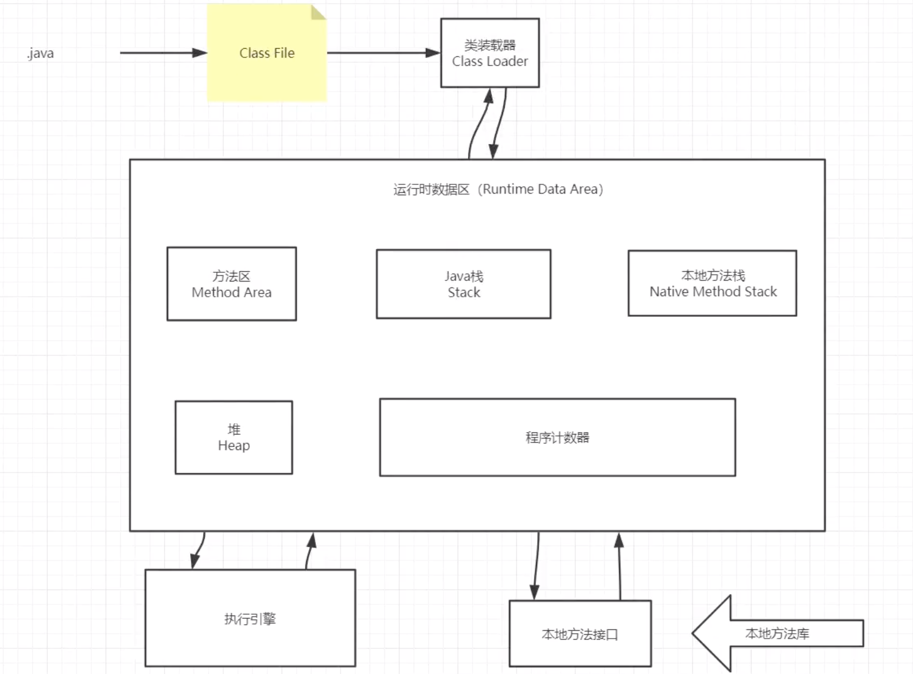
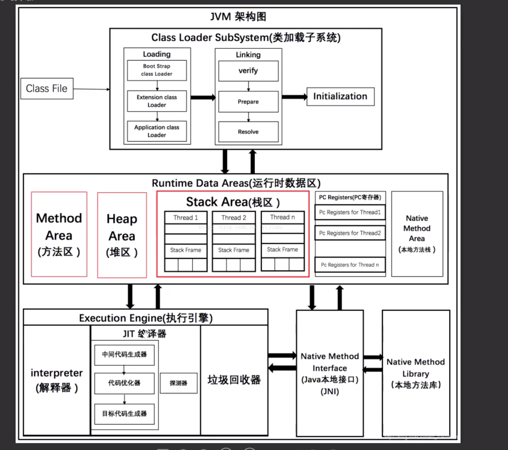

JVM
1. JVM的位置
1. JVM可以运行在操作系统上： windows linux macOS; 2. JVM类似其他软件运行在操作系统上， 由C++编写； 3. JRE包含了JVM, JVM运行流程： .java -> .class -> Class Loader类加载器 -> JVM
2. JVM的组成
jvm: 运行时数据区：Runtime Data Aera 1. 方法区 2. 栈区 3. 本地方法栈 4. 堆 5. 程序计数器 6. 本地方法库 ： 调本地方法 7. 执行引擎 栈、本地方法栈、程序计数器： 不存在垃圾， 不需要垃圾回收； 堆区、方法区： 需要回收垃圾； 所以JVM调优实际上是堆区调优；
JVM概图:
JVM详情图:
3. JVM类加载机制
类加载器分为： 1. 虚拟机自带的加载器； 2. 启动类(根)加载器， BootStrap; tr.jar 3. 扩展类加载器 ExtClassLoader； jre/lib/ext文件夹下的jar包 4. 应用程序(系统类)加载器,AppClassLoader； Car car = new Car(); Class<? extends Car> class1 = car.getClass(); //获取类加载器 ClassLoader classLoader = class1.getClassLoader(); //sun.misc.Launcher$AppClassLoader@18b4aac2 应用程序加载器 System.out.println(classLoader); ClassLoader parent = classLoader.getParent(); //sun.misc.Launcher$ExtClassLoader@610455d6 扩展类加载器 System.out.println(parent); ClassLoader parentParent = parent.getParent(); //null java输出不了启动类加载器 底层是c++ System.out.println(parentParent); JVM沙箱机制: 1. 字节码校验器：受检异常 2. 双亲委派机制(沙箱机制)： 为了保证类加载安全, JVM在查找类信息时: 先到BootStrap启动类加载器找类， 找不到就到ext扩展类加载器找， 再找不到就到应用程序类加载器中找, 如果找到了就不会继续往下面找; 可以将需要扩展的类放在扩展类加载器中，不要轻易修改tr.jar包；
演示双亲委派机制: 建一个java.lang的包, 在这个包下面新建一个String.java文件, 添加一个main方法; 运行main方法会报错, 原因就是: JVM在找这个java文件时, 现在启动类加载器中找到了相同的全限定名路径, 然后就不会继续往下找了:
/**
*
* 结论： 先找的是启动类加载器，找到了就不会继续往下面找
*
* 错误: 在类 java.lang.String 中找不到 main 方法, 请将 main 方法定义为:
* public static void main(String[] args)
* 否则 JavaFX 应用程序类必须扩展javafx.application.Application
*
*/
public static void main(String[] args) {
System.out.println(new String().toString());
}
4. JVM的栈
栈与队列: 栈： 先进后出 FILO ， 比如main方法最早开始执行， 最后结束; 队列： 先进先出 FIFO; 栈：栈内存，主管程序的运行，生命周期和线程同步, 线程结束，栈内存也就释放, 所以，对于栈来说不存在垃圾回收; 栈是线程私有的， 子线程的栈成为分支栈; 程序正在执行的方法一定在栈的顶部; 栈包含： 1. 方法索引index 2. 输入输出参数 3. 本地变量 4. Class File引用 5. 父帧 6 子帧
演示栈溢出的死循环:
//经典的栈溢出错误， 循环压栈，导致栈溢出
//Exception in thread "main" java.lang.StackOverflowError
//test1();
public static void test1(){
test2();
}
private static void test2() {
test1();
}
5. JMM的堆
堆Heap： 类加载器加载一个类时， 会将对象的实例放在堆中，对象的引用放在栈中，如果实例不用，就成了垃圾； 堆内存还要细分为三个区域： 1. 新生区（伊甸园区 + 幸存区0区 + 幸存区1区） young, 幸存区也叫from区和to区， from和to是可以切换的，空着的叫to区； 2. 养老区 老年区 old; 3. 永久区 Perm 在jdk8之后，名字改成了元空间; 新生区： 1. 类创建或者死亡的地方; 2. 包含伊甸园区和幸存区; 3. 所有的对象都是在伊甸园区new出来的; 养老区： 幸存区对象满了就会往养老区放; 永久区： jdk1.6之前: 永久代,常量池在方法区中; jdk1.7：永久代，但是慢慢退化了， 常量池在堆中; jdk1.8之后：无永久代，变成了元空间， 8之后方法区放在了元空间中，元空间逻辑上存在，物理上不存在, 元空间是直接内存，和堆是分开的; 永久区是常驻内存的，用来存放jdk自带的Class对象，Interface数据和元数据，存储的是Java运行时的环境信息，这个区域不存在垃圾回收； 第三方jar包放在这里，如果加载了大量的jar包，或者tomcat部署了太多的应用，或者动态生成大量的反射类，会导致OOM; JVM调优: 主要是在堆上， 栈、本地方法栈、程序计数器不存在垃圾回收问题; 一个JVM只有一个堆， 堆内存的大小是可以调节的： idea调节运行时参数： Edit Configuration -> 虚拟机参数：VM Options -> 程序参数：Program Arguments -Xms: 初始化总内存，默认大概为电脑内存64分之一 -Xmx:虚拟机试图使用的最大内存,默认大概为电脑内存四分之一 -Xms1024m -Xmx1024m -XX:+PrintGCDetails 获取JVM的初始化总内存大小和内存最大值: 虚拟机初始化总内存: System.out.println(Runtime.getRuntime().totalMemory() / 1024 / 1024.0 + "M"); 虚拟机试图使用的最大内存: System.out.println(Runtime.getRuntime().maxMemory() / 1024 / 1024.0 + "M"); GC分类： 1. GC:轻量级的垃圾回收：养老区没存满; 2. Full GC: 重量级的垃圾回收：养老区也存满了; GC垃圾回收主要是在伊甸园区和养老区, 内存满了就会报错OOM 方法区： 1. 线程共享； 2. 静态变量，常量，类信息(构造方法，接口定义)，运行时的常量池存在方法区中；但是实例变量在堆内存中，和方法区无关； static final class interface 运行时常量池
OMM实例:
//OOM错误
//Exception in thread "main" java.lang.OutOfMemoryError: Java heap space
String str = "xxxxxxx";
while (true){
str += str + new Random().nextInt(99999999) + new Random().nextInt(99999999);
}
如何解决OMM:
1.手动调节JVM堆内存大小; 2.分析内存; 使用JProfile分析是哪里出现了OOM: JProfile类似eclipse的MAT，都是用来分析dump的内存文件，快速定位内存泄露问题，获取堆中的数据， 获取比较大的对象; 在VM OPtions中设置dump文件的命令: OOM:-Xms1m -Xmx10m -XX:+HeapDumpOnOutOfMemoryError ClassNotFound: -Xms1m -Xmx10m -XX:+HeapDumpOnClassNotFound 会生成一个.hprof文件，可以用JProfile打开这个文件进行分析; /** * * java.lang.OutOfMemoryError: Java heap space * Dumping heap to java_pid90030.hprof ... * Heap dump file created [5557624 bytes in 0.048 secs] */ 在JProfile中打开文件后，查看current object set中的biggest objects, 和thread dump信息可以定位到OOM错误;
上面OMM实例使用-XX:+PrintGCDetails打印的JMM垃圾回收信息如下:
/** * * Heap * PSYoungGen total 59904K, used 5205K [0x00000007aab00000, 0x00000007aed80000, 0x00000007c0000000) * eden space 51712K, 10% used [0x00000007aab00000,0x00000007ab015438,0x00000007add80000) * from space 8192K, 0% used [0x00000007ae580000,0x00000007ae580000,0x00000007aed80000) * to space 8192K, 0% used [0x00000007add80000,0x00000007add80000,0x00000007ae580000) * ParOldGen total 136704K, used 0K [0x0000000780000000, 0x0000000788580000, 0x00000007aab00000) * object space 136704K, 0% used [0x0000000780000000,0x0000000780000000,0x0000000788580000) * Metaspace used 3111K, capacity 4496K, committed 4864K, reserved 1056768K * class space used 339K, capacity 388K, committed 512K, reserved 1048576K */ //OOM /** * * # 走的轻GC * [GC (Allocation Failure) [PSYoungGen: 1525K->486K(2048K)] 1525K->510K(7680K), 0.0018545 secs] [Times: user=0.00 sys=0.00, real=0.00 secs] * [GC (Allocation Failure) [PSYoungGen: 1960K->501K(2048K)] 1984K->589K(7680K), 0.0009994 secs] [Times: user=0.00 sys=0.00, real=0.00 secs] * [GC (Allocation Failure) [PSYoungGen: 1811K->352K(2048K)] 1899K->1347K(7680K), 0.0028127 secs] [Times: user=0.01 sys=0.00, real=0.01 secs] * [GC (Allocation Failure) [PSYoungGen: 1840K->368K(2048K)] 4287K->3178K(7680K), 0.0010899 secs] [Times: user=0.00 sys=0.00, real=0.00 secs] * [GC (Allocation Failure) [PSYoungGen: 1904K->400K(2048K)] 6165K->5387K(7680K), 0.0030287 secs] [Times: user=0.01 sys=0.00, real=0.01 secs] * # 走的重GC 伊甸园区和幸存区都存满了 * [Full GC (Ergonomics) [PSYoungGen: 400K->0K(2048K)] [ParOldGen: 4987K->2542K(5632K)] 5387K->2542K(7680K), [Metaspace: 2972K->2972K(1056768K)], 0.0055373 secs] [Times: user=0.00 sys=0.00, real=0.00 secs] * [Full GC (Ergonomics) [PSYoungGen: 1529K->0K(2048K)] [ParOldGen: 5445K->1820K(5632K)] 6975K->1820K(7680K), [Metaspace: 3043K->3043K(1056768K)], 0.0058594 secs] [Times: user=0.00 sys=0.00, real=0.01 secs] * [Full GC (Ergonomics) [PSYoungGen: 1497K->0K(2048K)] [ParOldGen: 4723K->4724K(5632K)] 6221K->4724K(7680K), [Metaspace: 3064K->3064K(1056768K)], 0.0135638 secs] [Times: user=0.01 sys=0.01, real=0.02 secs] * # 新生代垃圾回收了 又走轻gc * [GC (Allocation Failure) [PSYoungGen: 0K->0K(2048K)] 4724K->4724K(7680K), 0.0003891 secs] [Times: user=0.00 sys=0.00, real=0.00 secs] * * # PSYoungGen ParOldGen Metaspace 新生代 老年代 和 元空间都满了 就报错 * [Full GC (Allocation Failure) [PSYoungGen: 0K->0K(2048K)] [ParOldGen: 4724K->4704K(5632K)] 4724K->4704K(7680K), [Metaspace: 3064K->3064K(1056768K)], 0.0071381 secs] [Times: user=0.01 sys=0.00, real=0.01 secs] * Exception in thread "main" java.lang.OutOfMemoryError: Java heap space * at java.util.Arrays.copyOf(Arrays.java:3332) * at java.lang.AbstractStringBuilder.ensureCapacityInternal(AbstractStringBuilder.java:124) * at java.lang.AbstractStringBuilder.append(AbstractStringBuilder.java:674) * at java.lang.StringBuilder.append(StringBuilder.java:208) * at com.ethan.JVM.堆的垃圾回收.main(堆的垃圾回收.java:68) */
6. JVM的本地方法栈和寄存器
本地方法栈：
new Thread(()->{}, "A").start();
线程start方法底层是调用的native方法： private native void start0();
凡是带了native关键字的方法，代表java的作用范围达不到了，它会去调用底层c\c++, 本地方法栈回调用本地接口JNI：
JNI: Java Native Interface； 作用：主要是用来扩展Java功能，方便和其他语言通讯
程序计数器：
Program Count register
每个线程都有一个程序计数器， 是线程私有的，它是一个指针，指向方法区中的方法字节码，指向即将要执行的地址，是一个非常小的空间，几乎可以忽略不计；
7. JVM垃圾回收算法
GC的作用区域： 方法区和堆区 主要发生在： 新生代： 大部分时候，回收的都是新生代，轻GC; 幸存区(from, to); 老年区; 1. 标记清除法： 对存活的对象进行标记， 对没标记的对象进行清除; 优点：不需要额外的空间; 缺点： 需要两次扫描，浪费时间，会产生内存碎片; 2. 标记压缩法： 在标记清除的基础上，防止内存碎片的产生，需要再次扫描，向一端移动存活的对象，因此可以将内存碎片变成连续的内存； 优点: 可以将内存由碎片变成连续的内存空间； 缺点： 又多了一次扫描和一次移动； 3. 标记清除压缩法：先标记清除几次，再进行压缩； 综合了标记清除法和标记压缩法的优点； 4. 复制算法： 伊甸园区会将存活下来的对象移动到幸存区，幸存区1区和2区哪个是空的哪个就是to，另外一个是from，如果from和to都满了，就将其中的一个区的对象 赋值到另一个区，空的那个就成了to区，这样就能保证空的永远是to区，默认情况下，当一个对象经历15次GC还存在的话，就会进如养老区； 可以通过JVM参数调节这个数：-XX:MaxTenuringThrehold来控制对象进入养老区的GC次数； 每一次垃圾回收，正常情况下伊甸园区和from区会被清理干净； 优点： 没有碎片化； 缺点：浪费了空间内存，多了一个永远空着的to区； 5. 引用计数器： 维护一个计数器，每个对象使用一次就+1操作，消耗较大 比较垃圾回收算法： 时间复杂度,内存效率： 复制算法>标记清除算法>标记压缩算法 内存整齐度: 复制算法=标记压缩算法>标记清除算法 内存利用率: 标记压缩算法=标记清除算法>复制算法 最合适的垃圾回收算法： 分代回收算法： 年轻代： 存活率低，适合使用复制算法; 老年代： 存活率高，不适合使用复制算法，区域也大，这个使用使用标记清除和标记压缩混合实现;
8. JMM
JMM: 1. Java Memory Model, java内存模型; 2. 定义了共享数据在主存和内存之间的读写规则，定义了缓存一致性协议，JMM主要是线程之间可见性volatile相关; JMM的八种交互操作（每个操作都为原子操作）: lock （锁定）：作用于主内存的变量，把一个变量标识为线程独占状态; unlock （解锁）：作用于主内存的变量，它把一个处于锁定状态的变量释放出来，释放后的变量才可以被其他线程锁定; read （读取）：作用于主内存变量，它把一个变量的值从主内存传输到线程的工作内存中，以便随后的load动作使用; load （载入）：作用于工作内存的变量，它把read操作从主存中变量放入工作内存中; use （使用）：作用于工作内存中的变量，它把工作内存中的变量传输给执行引擎，每当虚拟机遇到一个需要使用到变量的值，就会使用到这个指令; assign （赋值）：作用于工作内存中的变量，它把一个从执行引擎中接受到的值放入工作内存的变量副本中; store （存储）：作用于主内存中的变量，它把一个从工作内存中一个变量的值传送到主内存中，以便后续的write使用; write （写入）：作用于主内存中的变量，它把store操作从工作内存中得到的变量的值放入主内存的变量中; 对八种操作的规则: 1. 不允许read和load、store和write操作之一单独出现。即使用了read必须load，使用了store必须write; 2. 不允许线程丢弃他最近的assign操作，即工作变量的数据改变了之后，必须告知主存; 3. 不允许一个线程将没有assign的数据从工作内存同步回主内存; 4. 一个新的变量必须在主内存中诞生，不允许工作内存直接使用一个未被初始化的变量。就是怼对量实施use、store操作之前，必须经过assign和load操作; 5. 一个变量同一时间只有一个线程能对其进行lock。多次lock后，必须执行相同次数的unlock才能解锁; 6. 如果对一个变量进行lock操作，会清空所有工作内存中此变量的值，在执行引擎使用这个变量前，必须重新load或assign操作初始化变量的值; 7. 如果一个变量没有被lock，就不能对其进行unlock操作。也不能unlock一个被其他线程锁住的变量; 8. 对一个变量进行unlock操作之前，必须把此变量同步回主内存;